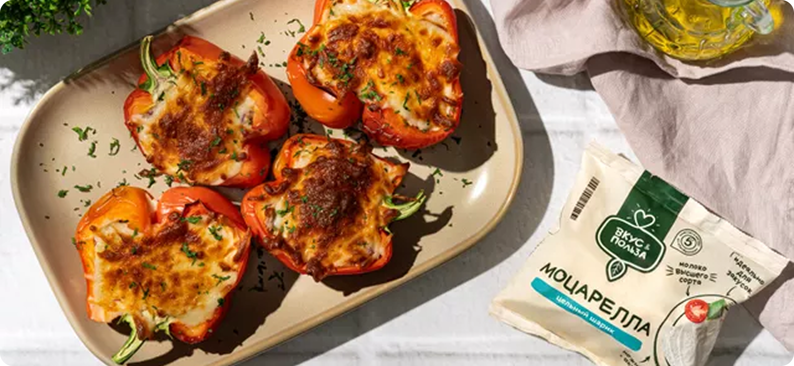
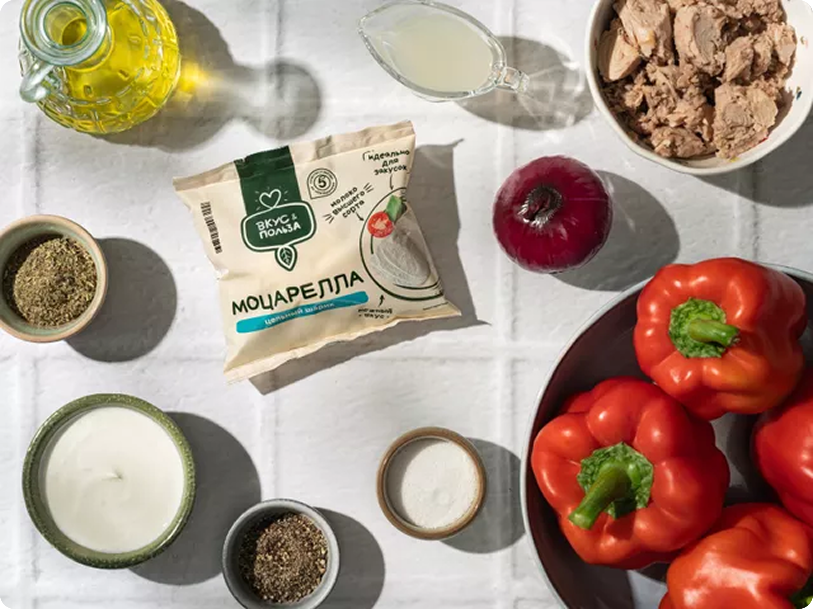
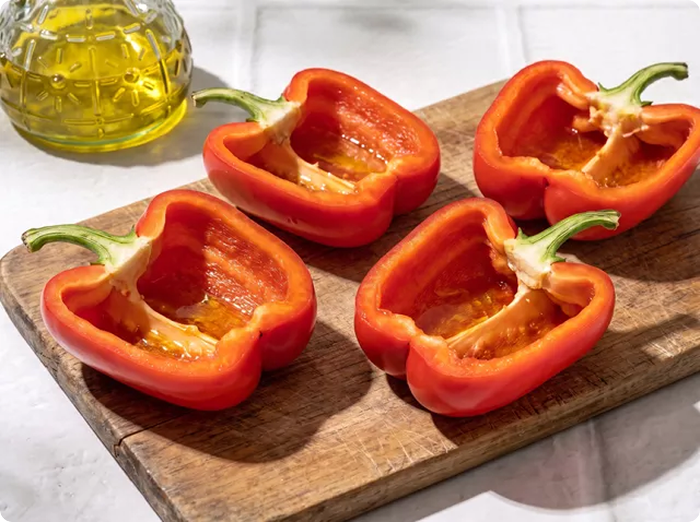
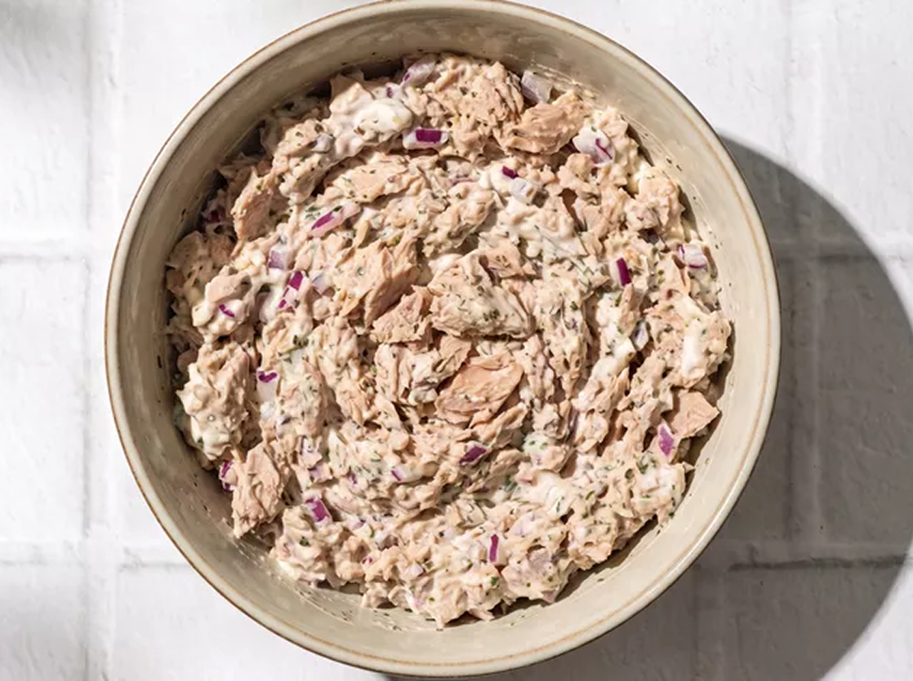
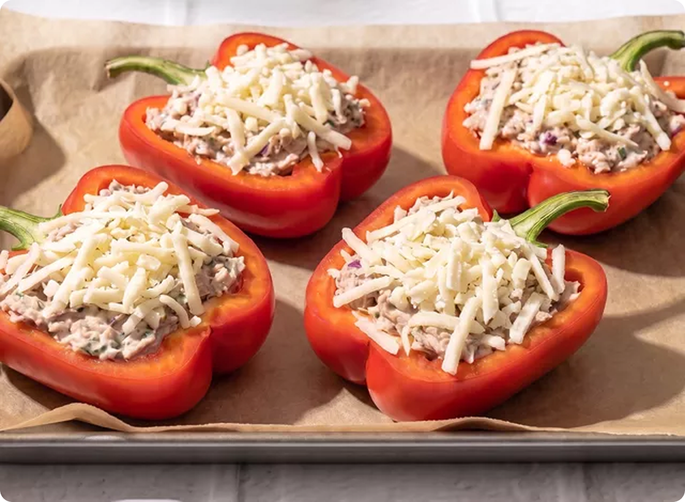
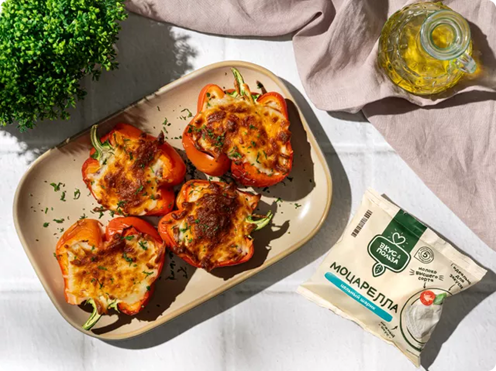

Вкусные рецеаты "Готовим вместе"

Запеченный перец с тунцом
Этот вариант фаршированных перцев готовится быстрее привычного. Начинку из консервированного тунца и моцареллы не нужно предварительно обжаривать. Благодаря мягкому вкусу рыба отлично сочетается со сладковатыми овощами, не перебивая их. Выбирайте крупные мясистые перцы красного или желтого цвета — они менее терпкие.
Для блюда
Пошаговый фоторецепт

Помойте овощи и обсушите их бумажными полотенцами. Откройте банки с филе тунца и слейте жидкость. Застелите противень пергаментом.

Разрежьте перцы вдоль пополам. Удалите семена и белые перегородки. Плодоножки оставьте, чтобы половинки лучше сохраняли форму после запекания. Смажьте полученные половинки оливковым маслом с двух сторон.

Мелко нарежьте красный лук. Разомните филе тунца вилкой и смешайте с нарезкой. Добавьте греческий йогурт, лимонный сок и итальянские травы. Перемешайте, попробуйте начинку и приправьте солью и перцем по вкусу.

Крупно натрите моцареллу. Распределите рыбную начинку по половинкам перцев и переложите заготовки на противень. Посыпьте тертым сыром и запекайте 20–25 минут при 180 °C.

Переложите запеченные перцы на тарелку и подайте просто так или с любым белым соусом.